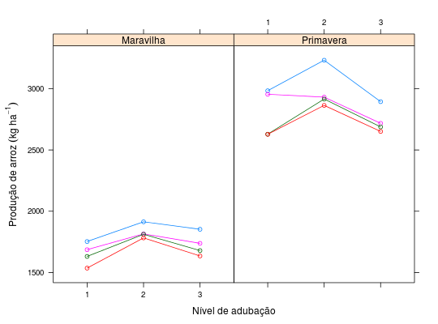

Dados de um experimento conduzido em faixas, no delineamento de blocos ao acaso, para testar o efeito da aplicação de adubos em arroz após pastagem no qual foram utilizadas três cultivares. Nesta tabela constam os dados de de produção de arroz, em kg ha\(^{-1}\), de duas dessas cultivares.
Um data.frame com 24 observações e 4 variáveis
blocoadubgenoprodZIMMERMANN (2004), Tabela 10.15, pág. 210.
A formulação da adubação empregada no ensaio de cultivar de arroz teve a seguinte composição
| Adub | N | P\(_2\)O\(_5\) | K\(_2\)O | Micros |
| Zn | 1 | 6 | 30 | 27 |
| 45 | 2 | 2 | 12 | 60 |
| 54 | 90 | 4 | Adub | N |
library(lattice) data(ZimmermannTb10.15)#> Warning: data set ‘ZimmermannTb10.15’ not foundstr(ZimmermannTb10.15)#> 'data.frame': 24 obs. of 4 variables: #> $ bloco: Factor w/ 4 levels "1","2","3","4": 1 2 3 4 1 2 3 4 1 2 ... #> $ adub : Factor w/ 3 levels "1","2","3": 1 1 1 1 2 2 2 2 3 3 ... #> $ geno : Factor w/ 2 levels "Maravilha","Primavera": 1 1 1 1 1 1 1 1 1 1 ... #> $ prod : num 1753 1686 1631 1536 1914 ...xyplot(prod ~ adub | geno, groups = bloco, data = ZimmermannTb10.15, type = c("p", "a"), xlab = "Nível de adubação", ylab = expression("Produção de arroz"~(kg~ha^{-1})))